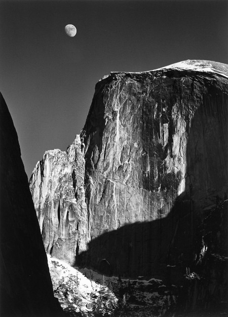
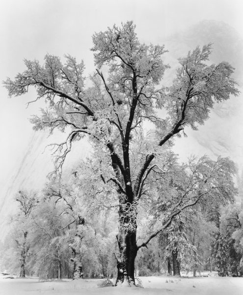

“At one with the power of the American landscape, and renowned for the patient skill and timeless beauty of his work, photographer Ansel Adams has been a visionary in his efforts to preserve this country’s wild and scenic areas, both on film and on Earth. Drawn to the beauty of nature’s monuments, he is regarded by environmentalists as a monument himself, and by photographers as a national institution. It is through his foresight and fortitude that so much of America has been saved for future Americans.”
-President James E. Carter Presenting Ansel Adams with the Presidential Medal of Freedom
THE ENVIRONMENTAL MOVEMENT
As we celebrate Earth Day this year we are reminded of the diligence required to affect change. Today the environment continues to be attacked and the clock is being turned back on progress on many fronts. Ansel Adams spent decades in the battle to protect our environment. At his core, his activism was driven by his love of the environment and his humanity.
The tumultuous 1968 Democratic National Convention included a visit from Ansel. Ever the outspoken environmentalist, Ansel gave a presentation to the DNC Platform Committee. His remarks, reprinted here , were prescient and are unfortunately more apt today than 50 years ago.
The message he presented was a foretelling of the climate crisis we face today.
“The fearful problem before us now is HOW TO SAVE THIS PLANET AS A WORLD TO LIVE IN. Conservation is implicitly more important than war and peace, politics, racism, national and international problems and jealousies. If the basic portents of ecology, natural and human, are not heeded, man is surely doomed.“
YOSEMITE IMAGES


BIOGRAPHY
Ansel Adams, photographer and environmentalist, was born in San Francisco, California, the son of Charles Hitchcock Adams, a businessman, and Olive Bray. The grandson of a wealthy timber baron, Adams grew up in a house set amid the sand dunes of the Golden Gate. When Adams was only four, an aftershock of the great earthquake and fire of 1906 threw him to the ground and badly broke his nose, distinctly marking him for life. A year later the family fortune collapsed in the financial panic of 1907, and Adams’s father spent the rest of his life doggedly but fruitlessly attempting to recoup. An only child, Adams was born when his mother was nearly forty. His relatively elderly parents, affluent family history, and the live-in presence of his mother’s maiden sister and aged father all combined to create an environment that was decidedly Victorian and both socially and emotionally conservative. Adams’s mother spent much of her time brooding and fretting over her husband’s inability to restore the Adams fortune, leaving an ambivalent imprint on her son. Charles Adams, on the other hand, deeply and patiently influenced, encouraged, and supported his son.
CLASSIC IMAGES
ANSEL ADAMS HELPS THE LESS FORTUNATE
When Japanese-Americans were forcibly relocated and interned at camps in the U.S. during World War II, it didn’t sit well with famed photographer Ansel Adams, according to Adams’ son, Michael. Ansel Adams “did a very extensive photographic project with the Japanese-Americans who were forced to live in Manzanar Relocation Camp near Lone Pine, California,” Michael Adams said in an email interview with The Leader. “He made several trips to the camp in 1943-44, and I went along on two of them. An exhibit and a book, entitled: ‘Born Free and Equal’ came of this project,” Michael Adams said. “His feelings for these American Citizens incarcerated in these camps at that time, were very strong, and the ‘Born Free and Equal’ book revealed those sentiments.” In a letter to the Library of Congress in 1965, Ansel Adams wrote, “The purpose of my work was to show how these people, suffering under a great injustice, and loss of property, businesses and professions, had overcome the sense of defeat and dispair [sic] by building for themselves a vital community in an arid (but magnificent) environment…. All in all, I think this Manzanar Collection is an important historical document, and I trust it can be put to good use.”
NATIONAL PARK IMAGES
ANSEL ADAMS GALLERY
The Ansel Adams Gallery is open seven days per week, from 9AM to 5PM, Pacific Time, with extended hours in the summer. NOTE: Thanksgiving and Christmas Eve hours are 10am-3pm and we are closed Christmas Day. We are located in the heart of Yosemite Valley, between the Visitor Center and Post Office, with incredible views of Yosemite Falls, Half Dome, and Glacier Point. Yes, we’re fortunate, and the staff includes climbers, photographers, hikers, dog lovers and generally people who love Yosemite. The Ansel Adams Gallery is an authorized concessioner of the National Park Service.In the summer of 1901, a landscape painter and political cartoonist for the San Francisco Chronicle by the name of Harry Best took an excursion to Yosemite Valley to camp and paint. Little did he know that this trip would have, indirectly, such an impact on so many. There are quite a few things going on, with the Gallery and through other organizations within Yosemite. Gallery programs are detailed here, and you can visit our calendar to find more information about dates, times, and other park programs.